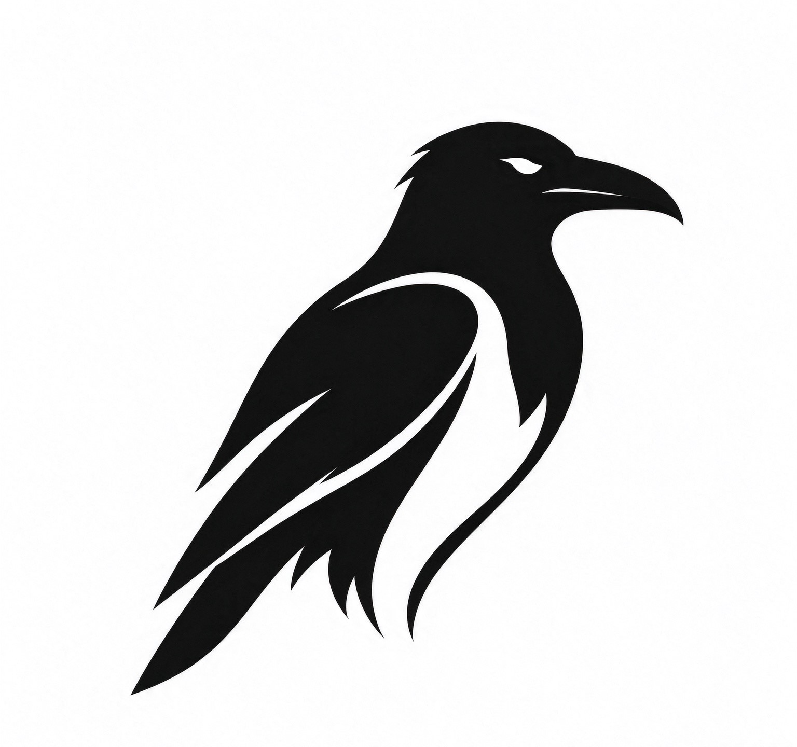
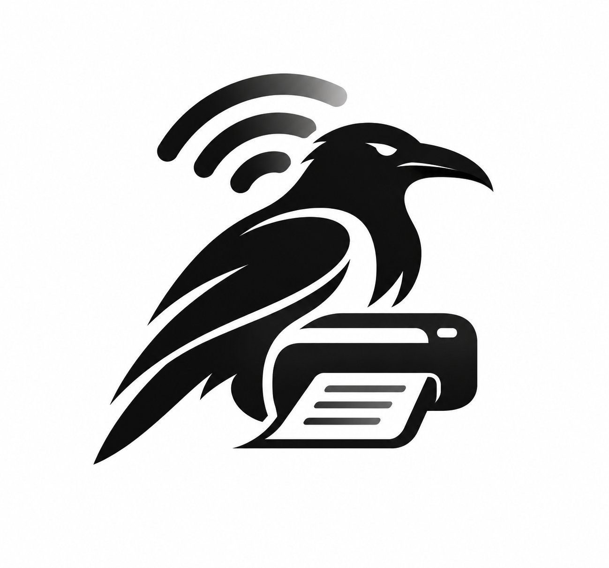
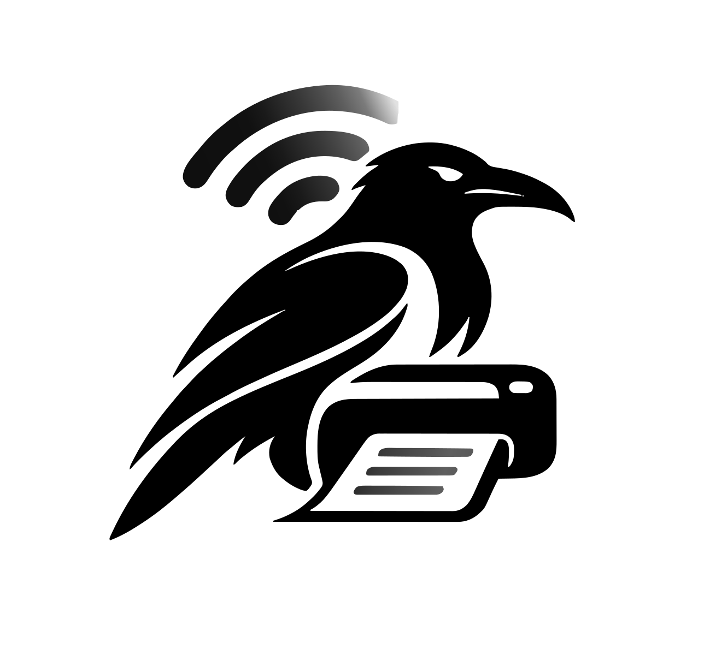

由 tools/vectrace.py 从位图重绘，纯路径 + 线性渐变，任意缩放都不糊。 第三列是把原图和矢量同时放大 4 倍看同一处细节。



WiFi 弧线和纸面横线的灰度是真·线性渐变（linearGradient），
不是把原图色块一层层堆出来，放到海报尺寸也不会有色阶断层。
单色版给激光打标、丝印、烫金这类只能用一种墨的工艺用。 弧线的灰度淡出在这种工艺里表达不了，所以末端是实心收口。